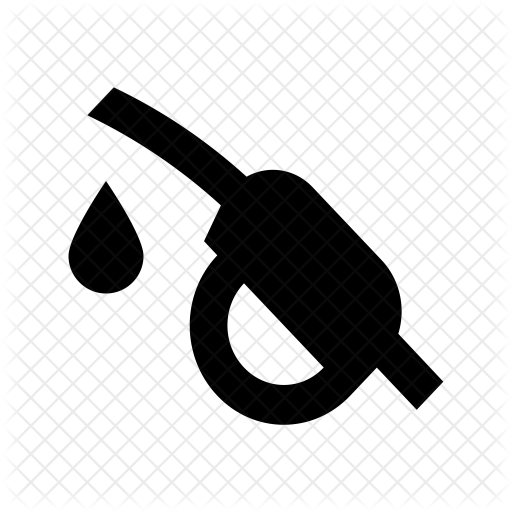

The world’s first Community-Created, Open Source, 100% On-Chain 2D RPG Ecosystem.

Obsidian Tears Is Powered By The
Internet Computer ICP
And All Nft And Game Assets Are Stored On The ICP Blockchain
The ICP BLOCKCHAIN provides
No Gas Fees

Low Storage Costs

Top Tips